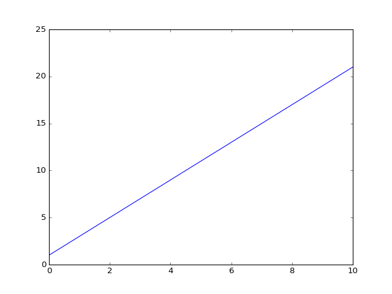

3. Steinbruch¶
Ok, here is a formula with a label
(1)\[f(x) = W x + b\]
\[\begin{align}
F(b) - F(a) &= \int_a^b f(x) dx
\label{test1}
\end{align}\]
And we can refer to this equation as Eq. (1). And this is an inline formula \(f(x)\). It is also possible to refer to \(\eqref{test1}\).
Todo
We really need to repair the eqautions references.
We can immediately plot the function. Here, for \(W=2\) and \(b=1\):
import matplotlib.pyplot as plt
import numpy as np
W = 2
b = 1
x = np.linspace(0, 10)
plt.plot(x, W*x+b)
plt.show()
(Source code, png, hires.png, pdf)

For the plot we have used the code:
1 2 | def sum(a, b):
return a + b
|
Or files can be sourced:
1 2 3 4 5 6 7 | import matplotlib.pyplot as plt
import numpy as np
W = 2
b = 1
x = np.linspace(0, 10)
plt.plot(x, W*x+b)
plt.show()
|
This is something taken from [TESTCIT2016]
Here is some JavaScript
-- click write and clear ---
And here an interactive plot:
Plot library: https://github.com/maurizzzio/function-plot
![digraph G {
rankdir=LR
splines=line
node [fixedsize=true, label=""];
subgraph cluster_0 {
color=white;
node [style=solid,color=blue4, shape=circle];
x1 x2 x3;
label = "layer 1 (Input layer)";
}
subgraph cluster_1 {
color=white;
node [style=solid,color=red2, shape=circle];
a12 a22 a32;
label = "layer 2 (hidden layer)";
}
subgraph cluster_2 {
color=white;
node [style=solid,color=seagreen2, shape=circle];
O;
label="layer 3 (output layer)";
}
x1 -> a12;
x1 -> a22;
x1 -> a32;
x2 -> a12;
x2 -> a22;
x2 -> a32;
x3 -> a12;
x3 -> a22;
x3 -> a32;
a12 -> O
a22 -> O
a32 -> O
}](../_images/graphviz-d80be2b774cbfcccc6738f643d7788d9020ba7b0.png)
{kind=link}
{kind=link}